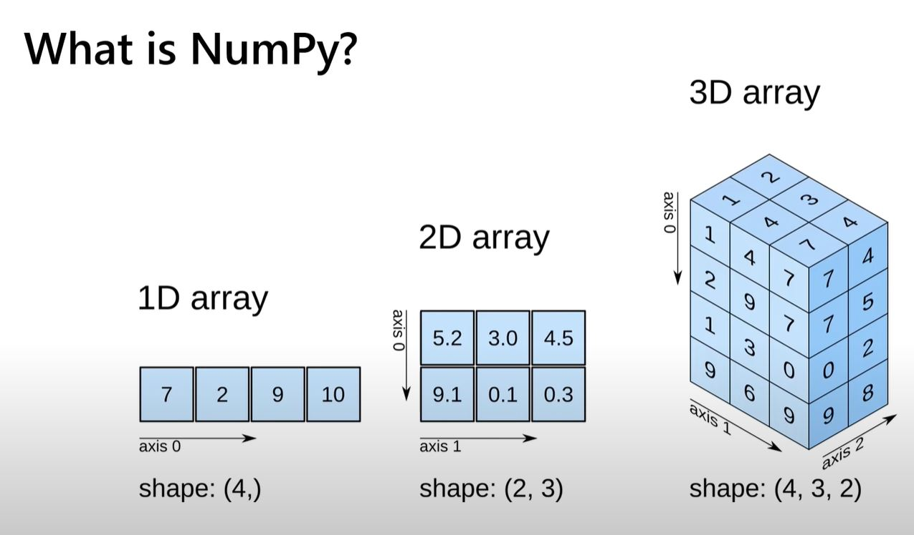
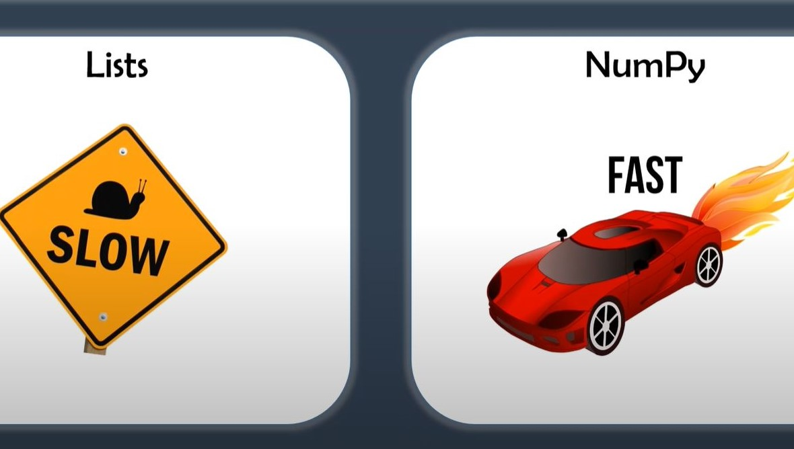
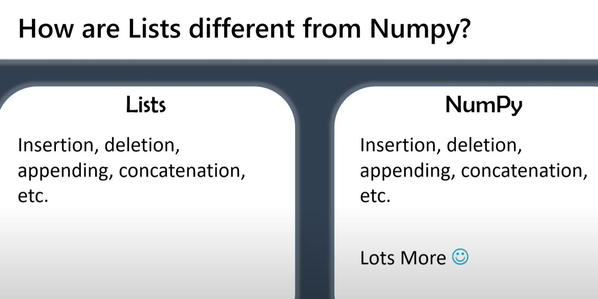
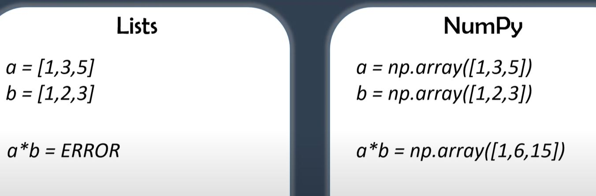
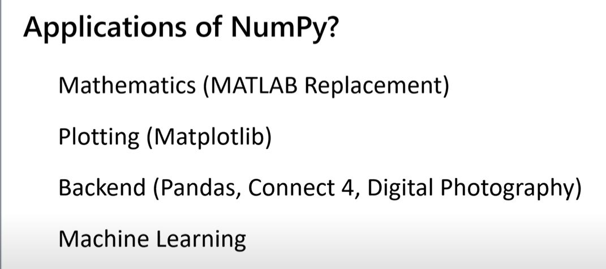
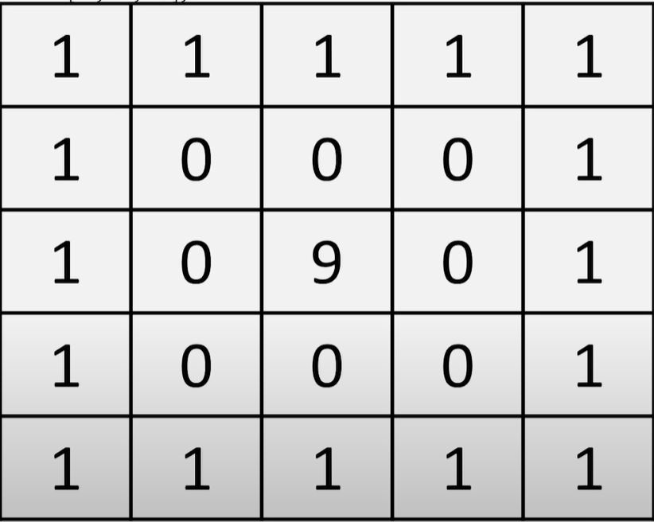
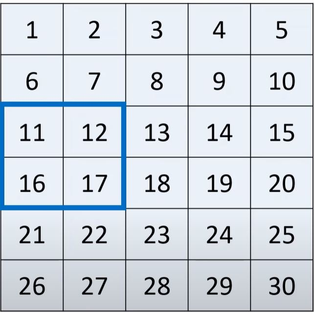
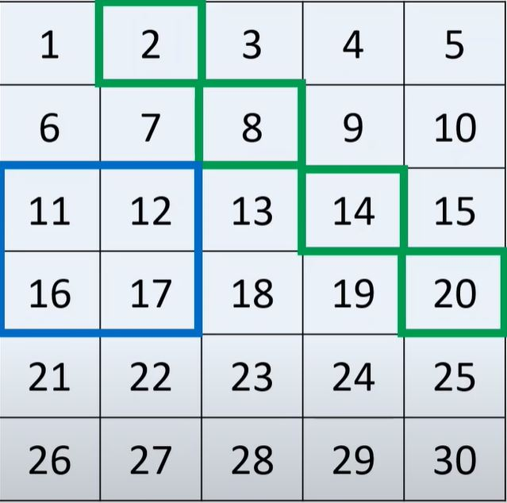
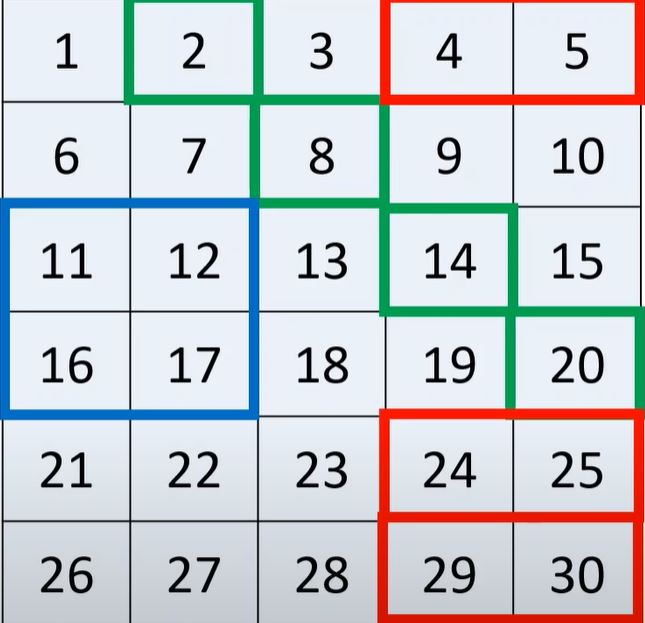

# load in
import numpy as npNumPy
NumPy is the fundamental package for scientific computing in Python. It is a Python library that provides a multidimensional array object, various derived objects (such as masked arrays and matrices), and an assortment of routines for fast operations on arrays, including mathematical, logical, shape manipulation, sorting, selecting, I/O, discrete Fourier transforms, basic linear algebra, basic statistical operations, random simulation and much more.
At the core of the NumPy package, is the ndarray object. This encapsulates n-dimensional arrays of homogeneous data types, with many operations being performed in compiled code for performance. There are several important differences between NumPy arrays and the standard Python sequences.
See the documentation for further information.

NumPy [ ] v Lists ( )
Why is NumPy faster?
NumPy has a significant speed advantage over Lists.

Let’s find out why…
- Less memory is used to represent data
Say for example the number 5. This is represented in binary form as follows:
- int8 which takes up 8 bits (or 1 byte) of memory and is represented in binary form as 00000101
NumPy can cast this to:
- int16 which takes up 16 bits (or 2 bytes) of memory and is represented in binary form as 00000000 00000101
- int32 which takes up 32 bits (or 4 bytes) of memory and is represented in binary form as 00000000 00000000 00000000 00000101
- int64 which takes up 64 bits (or 8 bytes) of memory and is represented in binary form as 00000000 00000000 00000000 00000000 00000000 00000000 00000000 00000101
Lists use a built in int type for Python which consists of four different things:
- object value
- object type
- reference count
- size of value
each of which use up memory:
- object value: 8 bytes 00000000 00000000 00000000 00000000 00000000 00000000 00000000 00000101
- object type: 8 bytes 11001010 10111110 01100001 01000100 11111100 00000000 11001100 01011111
- reference count: 8 bytes 00000001 00111101 11111110 10111100 00011010 11011101 10100100 11011000
- size of value: 4 bytes 00000000 00000000 00000000 00011100
No type checking when iterating through objects
NumPy utilizes contiguous memory which enables Single Instruction Multiple Data (SIMD) Vector Processing to be harnessed, and effective cache utilization
How do Lists differ from NumPy?

NumPy allows itemwise computation:

Applications of NumPy

SciPy
NumPy can perform complex mathematical operations, although the SciPy library allows even more advanced computation.
# which version?
np.__version__'1.22.4'The Basics
# create an array of integers
a = np.array([1,2,3])
aarray([1, 2, 3])# create an array of floating point numbers
b = np.array([[9.0,8.0,7.0],[6.0,5.0,4.0]])
barray([[9., 8., 7.],
[6., 5., 4.]])Shape of a NumPy array
Every NumPy array can be queried for its shape. A shape is a tuple of the format (n_rows, n_cols).
# Grab the array shape
a.shape(3,)Since there is no value after the comma, this is a one-dimensional array.
# Grab the array dimension
a.ndim1# Grab the array shape
b.shape(2, 3)(2, 3) means that the matrix has 2 rows and 3 columns.
# Grab the array dimension
b.ndim2# Get type
a.dtypedtype('int64')This is the default size, but we can assign a lower int value to save memory:
a = np.array([1,2,3], dtype='int16')
aarray([1, 2, 3], dtype=int16)# Get size - how many bytes?
a.itemsize2# Get size - how many bytes?
b.itemsize8# Get total number of elements
a.size3# Get total size
a.size * a.itemsize6# Get total size
a.nbytes6Indexing - accessing specific elements, rows, columns etc
Indexing
Remember - the first index of a NumPy array is zero! and not one
c = np.array([[1,2,3,4,5,6,7],[8,9,10,11,12,13,14]])
print(c)[[ 1 2 3 4 5 6 7]
[ 8 9 10 11 12 13 14]]c.shape(2, 7)# Get a specific element from row, column (r,c)
c[1,5]13# Get a specific element from row, column (r,c)
c[1,-2]13# Get a specific ROW
c[0, :]array([1, 2, 3, 4, 5, 6, 7])# Get a specific COLUMN
c[:, 2]array([ 3, 10])# Getting a little more fancy [start_index : end_index : step_size]
# Row 0, then columns 1 to 6 (excluding 6) in steps of 2
c [0, 1:6:2]array([2, 4, 6])Indexing - changing specific elements
# change row 1, column 5 value (13) to 20
c[1,5] = 20
print(c)[[ 1 2 3 4 5 6 7]
[ 8 9 10 11 12 20 14]]# change column 2 [3,10] to [21,28]
c[:,2] = [21,28]
print(c)[[ 1 2 21 4 5 6 7]
[ 8 9 28 11 12 20 14]]# 3-d example
d = np.array([[[1,2],[3,4]],[[5,6],[7,8]]])
print(d)[[[1 2]
[3 4]]
[[5 6]
[7 8]]]# Get specific example (work from outside in)
# the first index reference [0] relates to the first grouping
# [1, 2]
# [3, 4]
# the second index reference [1] relates to the second row within that grouping [3, 4]
# the third index reference [1] specifies the second column from the second row of the grouping [3,4] i.e 4
d[0,1,1]4# Get specific example (work from outside in)
# the first index reference : means we are selecting from both groupings
# [1 2]
# [3 4]
# [5 6]
# [7 8]
# the second index reference [1] relates to the second row from each of the groupings i.e. [3,4] and [7,8]
# the third index reference [:] specifies all values within those rows
d[:,1,:]array([[3, 4],
[7, 8]])Initializing Different Array Types
# All 0s matrix specifying shape
np.zeros(5)array([0., 0., 0., 0., 0.])# All 0s 2 x 3 matrix specifying shape
np.zeros((2,3))array([[0., 0., 0.],
[0., 0., 0.]])# All 0s 2 x 3 x 4 matrix
# first reference = number of groupings
# second reference = number of rows
# third reference = number of columns
np.zeros((2,3,4))array([[[0., 0., 0., 0.],
[0., 0., 0., 0.],
[0., 0., 0., 0.]],
[[0., 0., 0., 0.],
[0., 0., 0., 0.],
[0., 0., 0., 0.]]])# All 1s matrix
np.ones((4,2,2), dtype='int16')array([[[1, 1],
[1, 1]],
[[1, 1],
[1, 1]],
[[1, 1],
[1, 1]],
[[1, 1],
[1, 1]]], dtype=int16)# Any other number .full
np.full((2,2), 137, dtype='float32')array([[137., 137.],
[137., 137.]], dtype=float32)# Any other number .full_like
# creates a new array full of 4s matching the shape of the d array we previously created
np.full_like(d,4)array([[[4, 4],
[4, 4]],
[[4, 4],
[4, 4]]])# random decimals
# using random.rand
np.random.rand(1,3,7)array([[[0.16735136, 0.86937755, 0.30866395, 0.05841447, 0.28817268,
0.55635487, 0.87087044],
[0.95692978, 0.45277212, 0.87002198, 0.59516086, 0.56308885,
0.71476549, 0.64600732],
[0.06479773, 0.83108022, 0.0321547 , 0.3054754 , 0.72857438,
0.56460774, 0.72935517]]])# random decimals following shape of previously defined array
# using random.random_sample
np.random.random_sample(d.shape)array([[[0.04212123, 0.39748958],
[0.63778666, 0.3396428 ]],
[[0.33967012, 0.49291645],
[0.97990323, 0.45722717]]])# random integers
# first argument is range of integers to sample from (upper limit is EXclusive)
# second argument is shape - established by size=
np.random.randint(7,13, size=(3,3))array([[10, 10, 10],
[12, 12, 12],
[10, 7, 9]])# identity matrix
# ones on main diagonal and zeros elsewhere
# only one pararmeter as this is a square matrix
np.identity(7)array([[1., 0., 0., 0., 0., 0., 0.],
[0., 1., 0., 0., 0., 0., 0.],
[0., 0., 1., 0., 0., 0., 0.],
[0., 0., 0., 1., 0., 0., 0.],
[0., 0., 0., 0., 1., 0., 0.],
[0., 0., 0., 0., 0., 1., 0.],
[0., 0., 0., 0., 0., 0., 1.]])# repeat a matrix using .repeat
# first argument is array to be repeated
# second argument is how many times to be repeated
# axis 0 refers to rows
arr = np.array([[1,3,7]])
r1 = np.repeat(arr,3,axis=0)
print(r1)[[1 3 7]
[1 3 7]
[1 3 7]]# repeat a matrix using .repeat
# first argument is array to be repeated
# second argument is how many times to be repeated
# axis 1 refers to columns
arr = np.array([[1,3,7]])
r1 = np.repeat(arr,3,axis=1)
print(r1)[[1 1 1 3 3 3 7 7 7]]How might we go about initializing the matrix below?

# create a 5 x 5 1s matrix for the outer layer
outputs =np.ones((5,5))
outputsarray([[1., 1., 1., 1., 1.],
[1., 1., 1., 1., 1.],
[1., 1., 1., 1., 1.],
[1., 1., 1., 1., 1.],
[1., 1., 1., 1., 1.]])# create a 3 x 3 zero matric for the middle layer
z = np.zeros ((3,3))
zarray([[0., 0., 0.],
[0., 0., 0.],
[0., 0., 0.]])# fil in middle element i.e row 1 column 1 with a 9
z[1,1] = 9
zarray([[0., 0., 0.],
[0., 9., 0.],
[0., 0., 0.]])# replace outer layer with inner layers
outputs[1:4,1:4] = z
outputsarray([[1., 1., 1., 1., 1.],
[1., 0., 0., 0., 1.],
[1., 0., 9., 0., 1.],
[1., 0., 0., 0., 1.],
[1., 1., 1., 1., 1.]])Be careful when copying arrays
a = np.array([1,2,3])
aarray([1, 2, 3])# if you equate two arrays then any changes impact BOTH
# this is NOT making a copy!
b = a
barray([1, 2, 3])# To illustrate let's change the first element of b
b[0] = 137
barray([137, 2, 3])# note the first element in a has also changed!
aarray([137, 2, 3])In order to make a copy we have to use .copy:
a = np.array([1,2,3])
aarray([1, 2, 3])b = a.copy()
barray([1, 2, 3])b[0] = 137
barray([137, 2, 3])aarray([1, 2, 3])Mathematics
We can carry out element wise arithmetic using NumPya = np.array([1,2,3,4])
aarray([1, 2, 3, 4])# add 2 to every element within the array
a + 2array([3, 4, 5, 6])# deduct 2 from every element within the array
a - 2array([-1, 0, 1, 2])# multiply every element within the array by 2
a * 2array([2, 4, 6, 8])# divide every element within the array by 2
a / 2array([0.5, 1. , 1.5, 2. ])b = np.array([1,0,1,0])
a + barray([2, 2, 4, 4])a ** 3array([ 1, 8, 27, 64])# Take the sin
np.sin(a)array([ 0.84147098, 0.90929743, 0.14112001, -0.7568025 ])# Take the cos
np.cos(a)array([ 0.54030231, -0.41614684, -0.9899925 , -0.65364362])For a comprehensive outline of the mathematical operations possible using NumPy see the documentation.
Matrix Multiplication
Note that for matrix multiplication the number of rows of one of the matrices needs to match the number of columns of the other matrix:
# 2 rows x 3 columns
a = np.ones ((2,3))
aarray([[1., 1., 1.],
[1., 1., 1.]])# 3 rows x 2 columns
b = np.full((3,2), 2)
barray([[2, 2],
[2, 2],
[2, 2]])
Matrix Multiplication
Matrix multiplication can only be performed where the number of rows in Matrix A match the number of columns in Matrix B. For example we can multiply a 2 row x [3] column matrix by a [3] row x 2 column matrix. The resulting matrixc is a 2 x 2 matrix - the [3]s cancel out leaving the outer 2s.
# Let's try to multiply together
a * bValueError: operands could not be broadcast together with shapes (2,3) (3,2) Hold on - why is this not working?! Our matrix multiplication criteria is satisfied - the number of rows in matrix a = 2 which matches the number of columns in matrix b. Don’t panic! We just have to use the .matmul() function instead:
# Let's try again using .matmul
np.matmul(a,b)array([[6., 6.],
[6., 6.]])Determinant of a matrix
The determinant of a 2 × 2 matrix is:

For simplicity let’s use an identity matrix to illustrate. Recall that the identity matric has 1s on the leading diagonal and 0s elsewhere:
i= np.identity(2)
i array([[1., 0.],
[0., 1.]])An identity matrix using the above formula should have a determinant of 1:
# calc the determinant of identity matrix i
np.linalg.det(i)1.0There are many other linear algebra operations that can be performed. See the documentation for more detail.
Summary statistics
stats = np.array([[1,2,3],[4,5,6]])
statsarray([[1, 2, 3],
[4, 5, 6]])np.min(stats)1np.max(stats)6np.mean(stats)3.5np.std(stats)1.707825127659933np.sum(stats)21# sum by row going downwards (axis = 0)
np.sum(stats, axis = 0)array([5, 7, 9])# sum by column going across (axis = 1)
np.sum(stats, axis = 1)array([ 6, 15])Reorganizing arrays
before = np.array([[1,2,3,4],
[5,6,7,8]])
beforearray([[1, 2, 3, 4],
[5, 6, 7, 8]])before.shape(2, 4)In some cases we might want to change the shape of the array:
after = before.reshape(8,1)
afterarray([[1],
[2],
[3],
[4],
[5],
[6],
[7],
[8]])after = before.reshape(2,2,2)
afterarray([[[1, 2],
[3, 4]],
[[5, 6],
[7, 8]]])Vertcally stacking vectors
v1 = np.array([1,2,3,4])
v2 = np.array([5,6,7,8])
np.vstack([v1,v2])array([[1, 2, 3, 4],
[5, 6, 7, 8]])# we can stack as much as we want any in any order
np.vstack([v1,v2,v2,v2,v1,v1,v2])array([[1, 2, 3, 4],
[5, 6, 7, 8],
[5, 6, 7, 8],
[5, 6, 7, 8],
[1, 2, 3, 4],
[1, 2, 3, 4],
[5, 6, 7, 8]])Horizontally stacking vectors
h1 = np.ones((2,4))
h2 = np.zeros((2,2))
h1array([[1., 1., 1., 1.],
[1., 1., 1., 1.]])h2array([[0., 0.],
[0., 0.]])np.hstack([h1,h2])array([[1., 1., 1., 1., 0., 0.],
[1., 1., 1., 1., 0., 0.]])Other use cases
# Load data from file using .genfromtxt
# automatically cast as float type
filedata = np.genfromtxt('NumPy.txt', delimiter=',')
filedataarray([[ 1., 13., 21., 11., 196., 75., 4., 3., 34., 6., 7.,
8., 0., 1., 2., 3., 4., 5.],
[ 3., 42., 12., 33., 766., 75., 4., 55., 6., 4., 3.,
4., 5., 6., 7., 0., 11., 12.],
[ 1., 22., 33., 11., 999., 11., 2., 1., 78., 0., 1.,
2., 9., 8., 7., 1., 76., 88.]])# cast the data as int32
filedata = filedata.astype('int32')
filedataarray([[ 1, 13, 21, 11, 196, 75, 4, 3, 34, 6, 7, 8, 0,
1, 2, 3, 4, 5],
[ 3, 42, 12, 33, 766, 75, 4, 55, 6, 4, 3, 4, 5,
6, 7, 0, 11, 12],
[ 1, 22, 33, 11, 999, 11, 2, 1, 78, 0, 1, 2, 9,
8, 7, 1, 76, 88]], dtype=int32)Boolean masking and advanced indexing
# this returns a boolean for every vlaue based on our condition
filedata > 50array([[False, False, False, False, True, True, False, False, False,
False, False, False, False, False, False, False, False, False],
[False, False, False, False, True, True, False, True, False,
False, False, False, False, False, False, False, False, False],
[False, False, False, False, True, False, False, False, True,
False, False, False, False, False, False, False, True, True]])This is good but not very helpful. We really want to extract the values:
# this is better as this returns the values that meet our condition
filedata[filedata > 50]array([196, 75, 766, 75, 55, 999, 78, 76, 88], dtype=int32)Indexing with a List
a = np.array([1,2,3,4,5,6,7,8,9])
# Let's grab 2, 3 and 9
a[[1,2,-1]]NameError: name 'np' is not definednp.any(filedata > 50, axis = 0)array([False, False, False, False, True, True, False, True, True,
False, False, False, False, False, False, False, True, True])np.any(filedata > 50, axis = 1)array([ True, True, True])np.all(filedata > 50, axis = 0)array([False, False, False, False, True, False, False, False, False,
False, False, False, False, False, False, False, False, False])np.all(filedata > 50, axis = 1)array([False, False, False])(filedata > 50) & (filedata < 100)array([[False, False, False, False, False, True, False, False, False,
False, False, False, False, False, False, False, False, False],
[False, False, False, False, False, True, False, True, False,
False, False, False, False, False, False, False, False, False],
[False, False, False, False, False, False, False, False, True,
False, False, False, False, False, False, False, True, True]])# ~ means NOT and negates the condition specified
(~((filedata > 50) & (filedata < 100)))array([[ True, True, True, True, True, False, True, True, True,
True, True, True, True, True, True, True, True, True],
[ True, True, True, True, True, False, True, False, True,
True, True, True, True, True, True, True, True, True],
[ True, True, True, True, True, True, True, True, False,
True, True, True, True, True, True, True, False, False]])Wrap up
How would we index the blue highlighted section of the matrix below:

First we index the row range, and then the column range:
a[2:4, 0:2]How would we index the green highlighted section of the matrix below:

We can do this by using two different lists within our indexing. The first list contains the row indices and the second list contains the column indices:
a[ [0,1,2,3], [1,2,3,4] ]How would we index the red highlighted section of the matrix below:

Again, we can do this by using two different lists. The first list contains the required rows, and the second list contains the required column range:
a [[0,4,5], 3:]Acknowledgements
Thanks once again to Santiago for signposting this video posted by Keith Galli. This blog was written after interactively working through it.
%%HTML
<iframe width="560" height="315" src="https://www.youtube.com/embed/QUT1VHiLmmI" title="YouTube video player" frameborder="0" allow="accelerometer; autoplay; clipboard-write; encrypted-media; gyroscope; picture-in-picture" allowfullscreen></iframe>